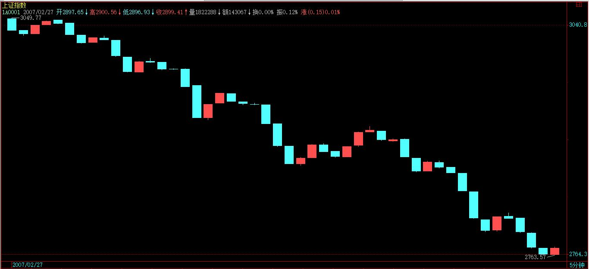
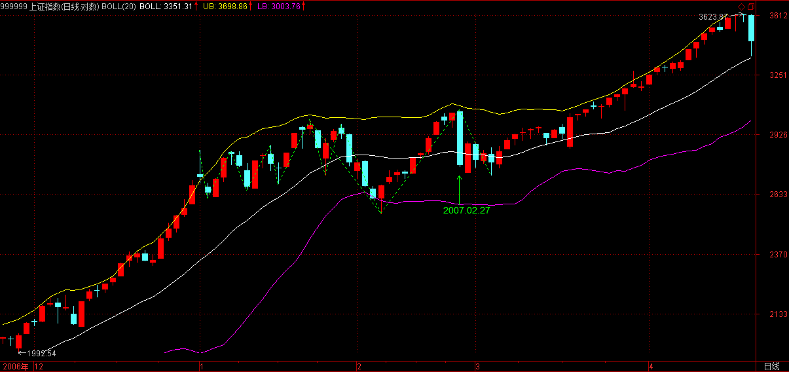

(2007-04-20 08:51:58)
【韶山映山红】这个上证指数分时图的题图是博客原始配图。1A0001.jpg（2007-04-20 08:58）】
一个很显然的道理，对市场了解越多，对走势的把握越精确。【韶山映山红】对市场的了解，可以包罗万象，就不只是Ｋ线图这点事了。】
例如，昨天20070419的2007年一夜情行情，【韶山映山红】2007年4月19日居然真的是419行情，也是醉了。】跌破5日线后有一个反抽，在11点08刚好构成对前一天中枢的第三类卖点，这就是最后的、被本ID理论所保障的离开机会。【韶山映山红】这个反抽是一个小转大的a+A结构。什么时候可以判断小转大不是转折而确定这个三卖点呢？★可以做个专题，以后研究。】
【韶山映山红】具体到这个实例，由于没有a+A+b盘整背驰，也就没有本级别背驰，只是a+A盘整背驰之后的三买转二卖，这个次次级别的二卖就是中枢级别三卖的确认点和操作点。这是1分钟K线图，看不到更低级别，实际上做不到当下确认这个二卖，所以二卖点之后跌破三买就是买卖点的破坏，这是最快的操作点，拖延到跌破中枢ZG就是走势的破坏，跌破中枢的ZD就可以视为翻转了，这个操作点也是可以接受的。翻转之后又要开始找买点了。 至于13:30的那一波反弹，和构成三卖的走势是同一个级别，而且是意外的反弹，不是操作点。】
【韶山映山红】13:30的那一波反弹，构成了同级别中枢，成为了下跌趋势。从这个角度看，这个反弹也不能成为三卖的操作点。】
【韶山映山红】严格说来，这里也不是一个次级别反弹，这个中枢也不严谨。看做前一个中枢的三卖之后的线段类下跌趋势更好。】
那么，后面去走，就完全与本ID的理论无关了，在一个下跌里，除了最后那一个位置，所有的卖出都是对的，但这和本ID的理论无关，这类似赌博，就赌不是最后的位置。当然，赌博也是一种方法，但这种把握，不在本ID的讨论范围内。【韶山映山红】从逻辑上说，在一个下跌里，除了最后那一个位置，所有的卖出都是对的，所有的买入都是错的，所以最后那一个位置，就是成败的关键。那么，对缠论来说，买点都在下跌里，卖点都在上涨中，逆市而为，岂不是做反了，还怎么赌？所以，缠论不能有半点赌的心态，那样是作死。缠论仰仗的是区间套的背驰，以及完全分类的应对。】
有人可能要问，就算跌破5日线，也可能很快就拉起来，确实，存在这种可能性，但市场是否选择这种可能性，就是当下的。
如果很快拉起来，那自然会有一个符合本ID理论的买点出现，这只要市场自己去选择，既然已经卖出，就耐心等待。而其中，当然与分析的精确度有关，有些人分析不到位，会回补早了，那这很正常，技术更熟练的，当然应该享受更精确的买点。
但节奏是重要的，站在小级别操作的角度，就算你补早了，也比没走傻看着强。补早了，就以后多总结经验，使自己的技术精度更高。
不过，必须强调的是，上面说的，都是针对资金比较小，操作级别比较小的说的。如果是按日线级别操作，那这些震荡根本无须理会。如果真按日线操作的，就应该从1000多点一直拿到现在，因为日线级别的卖点并没有出现，等出现再说。而用周线级别操作的大资金，那就更无所谓了。此外，这里只是以指数为代表来说一种方法，个股在自己的图上是一样分析的。
【韶山映山红】若禅精舍（陈秋明）注：
指数和个股的区别还是比较明显的，主要体现在小级别走势的稳定程度上，这是由其分力结构的均衡性决定的，但其中的分析原理和逻辑都相同。指数的一分钟比较规则，个股的就不一定了，有些大盘子的个股，一分钟图形上织布机一样，划分起来就会比较麻烦。但落实在具体操作上，对个股一般都看不到一分钟级别，更不用去操作了，个股即使是超短线，一般也是以五分钟走势为分析基础。
由于分力结构足够复杂，所以指数的走势最加稳定而标准，对缠论来说，精确的对指数一分钟级别走势进行分析判断，是任何操作的基本功，就好像数学里的九九乘法表一样。如果连指数都不能当下判断买卖点，给出后续走势的分类和触发条件，操作个股就只能蒙了，这是考较一个人对缠论的学习是否足以应付通常走势操作的标准。这个标准简单说起来，就是盘中直播指数一分钟级别的走势与后续分类，并当下精确给出买卖点，水平再高点的话，可以通过5分、30分、日线级别的走势结构，对当下所处阶段与一分钟走势分类所对应的高级别状态给出当下的判断。没有这个能力，说缠论学的如何如何，都是瞎扯。】
其实，如果你对市场理解更多点，就知道，这一夜情走势的当天低点，其实是很容易把握的。这就和上节所说的当日走势分类有关。最后一个第三类卖点对5日线进行反抽出现在11点08。前面3个30分钟K线，没有重叠。也就是说，下面走势显然不可能出现存在两个中枢的单边走势，三大类里，第二类是不可能出现了。【韶山映山红】“任何一天的走势，无非只有三类：一、只有一个中枢；二、两个中枢。三、没有中枢，其力度依次趋强。”第5根如果大跌，6、7、8还可以形成中枢。这里说不可能了，由此可以推断，2、3、4这样的三根不算重叠。3、4、5这样的才算。】

对于第一类，平衡市的走势，最好的情况，也只能是当日中枢在11点后那个K线范围内。【韶山映山红】最好的情况为什么不是收在高点附近？以后研究。】
至于出现第三类，也是就没中枢的走势，那意味着后面有巨大跌幅。【韶山映山红】第4根K线的开盘位置可以确定2、3、4根至少的重叠区域，这一句再次说明，2、3、4这样的三根不算重叠。】
而第三类卖点后面，至少都会出现一个次级别的跌势，也就是一个1分钟以下级别的向下走势是必须完美的。所以，站在纯理论推理的角度，可以100%确定地安排后面可能的回补，也就是，从11点08开始的向下走势至少要出现走势的完美。
注意，这些分析，在11:08后就马上可以给出，并不需要预测或事后编排，都是根据可以根据本ID理论严格分析出来的。
下午开盘后，到13:30点，就知道，第三类可能不存在了，因为当日一个连续3个30分钟K线的重合已经出现，也就是当日的中枢出现了，也就是说，到13:30分钟，市场已经自己给出了选择，市场不可能出现2.27那天的无中枢下跌，最多就是一个弱的平衡市，因此，10:30到13:30这个中枢，就是最值得关注的。【韶山映山红】“10:30到13:30这个中枢”就是3、4、5这三根K线。】
【韶山映山红】从5分钟图上能够更清楚的看到“10:30到13:30这个中枢”。前面两根30分钟K线一直是下跌，所以不是中枢的组成部分。】
【韶山映山红】下面就是“2.27那天的无中枢下跌”的30分钟图和5分钟图。】

用中枢震荡的观点，需要比较的就是10:30前的下跌与13:30点后的下跌。这时候，大盘还没有真正对该中枢破位，但已经可以100%肯定地知道一旦破位，需要去看什么来决定买卖点。
用MACD辅助，显然1分钟图并不适合看，因为10:30到13:30分钟前，这个MACD已经有绿柱子了，这样看起来费劲，可以选择更大级别的图，5分钟的。

在5分钟图上，10:30前的下跌刚好构成一个绿柱子面积，而10:30到13:30刚好出现回拉，所以黄白线没有明显到0轴，但红柱子是有了，【韶山映山红】虽然……但是……这个回拉0轴太没有诚意了。★】所以，用中枢震荡的看法，后面的下跌，出现的背驰不会是5分钟级别的，只能是5分钟以下级别的，【韶山映山红】后面下跌走势的级别够了，背驰的级别不够，所以“用中枢震荡的看法”。】甚至就是分笔级别的最小背驰，然后引发大幅度回拉该中枢附近。【韶山映山红】问题是，在那个当下，底部这种小级别的背驰“引发大幅度回拉该中枢附近”的预判依据是什么？★小级别背驰、小级别转折的大幅度运动。可以做个专题，以后研究。】
当然，如果是特小级别的背驰，并不一定有足够力度决定其一定能拉回该中枢，【韶山映山红】小转大的力度不能预设。】但由于这中枢的存在，其力度是可预期的。【韶山映山红】中枢的引力如何预期？定性？定量？★以后研究。】
【韶山映山红】若禅精舍（陈秋明）注：
一个走势的演化中，中枢是最重要的，那是后续走势波动分析与判断力度的标准，一般来说，只要走势的次级别abc三段形成，后面就都好分析，根据各段的力度就可以进行分类和触发条件的给出。
在破位下跌的过程中，一定要小心第三卖点的出现，该图在一分钟上就是盘整背驰转第三卖点后加大力度下跌的例子，千万不要看到盘整背驰段就拿着不放了。在最弱的走势中，第三卖点的形态可以是向下奔走的一个中枢，那样的话连退出的余地都没有了。
】
上面的分析，在大盘13:30没真正继续破位前，就可以100%明确地给出，里面都是纯逻辑的推理，和任何预测无关。【韶山映山红】这里说的“破位”是破哪个位？“10:30到13:30的中枢”。】
假设你已经在11:08的第三类卖点出去了，而且你又是小级别操作者，那你需要的就是回补，所以有了如上分析，你就可以耐心等待，看5分钟图去比较其力度了。
而且，你应该知道，强力回拉，并不一定需要一个1分钟的背驰，在大幅度下跌后，一个分笔的背驰就足以引发盘中大幅回拉该中枢，【韶山映山红】同样的道理，强力回落，也并不一定需要一个1分钟的背驰，在大幅度暴拉之后，一个分笔的背驰就足以引发盘中大幅回落该中枢。问题是，如何预判那些真的涨跌停？只能当做太小级别的波动而放过？★可以做个专题。以后研究。】
特别，由于10:30前下跌引发的反抽也是一个分笔的背驰造成，一般来说，中枢震荡都有对称性，虽然不是绝对，但已经足以让你不会忽视分笔背驰引发小级别转大级别的极大可能。【韶山映山红】这里讲的“中枢震荡都有对称性”的两个对比参照物是指：1，中枢前面即将形成中枢的那个下跌转折，2，中枢结束后离开中枢发生的那个的下跌转折。】
（分笔背驰，一般可以用1分钟MACD柱子的长度来辅助）【韶山映山红】K线最低点的时候，MACD柱子已经开始缩短。】
【韶山映山红】若禅精舍（陈秋明）注：
急剧的下跌，往往都会有急剧的反弹，特别是在高级别刚开始下跌的时候，这是因为前面上涨过程中做多的分力能量仍然没有耗尽造成的。所以万不得已的砍仓，一般都不提倡追着砍，但人的心理在急跌中最容易有恐慌，这很大程度上是因为观察的级别太小导致的，一分钟的急跌，放在30分钟上，往往就没有那么又压迫性了。】
在大盘进入再次下跌时，你已经有足够的准备去等待。而且，你可以很明确地知道，在跌破10:30到13:30的中枢后，首先会有一个小的第三类卖点，小的第三类卖点后，有两种演化的可能，一是变成一个大一点级别的盘整，一个是形成下跌，至少再有两段向下。对第一种情况，在这盘整出现后，有足够的时间去选择介入，所以不用着急。而后面市场的真实选择，现在都很清楚了，就是第二种，在一个小的第三类卖点后，再出现两波下跌。
对于一个跌破中枢的下跌来说，第三类卖点后再来两波就可以随时完美。这个完美，由于该下跌是1分钟以下级别的，因此从该下跌的细部，是找不到根据1分钟背弛去确认的买点的，只可能根据分笔背驰。
而根据预先知道的中枢震荡看法，唯一需要确认的是，13:30后的下跌与10:30前下跌的力度比较。从5分钟MACD两柱子面积的比较可以看到，前者并不比后者的力度大，
这一点，参考看深圳成指的图就更明显了（请看下图）。【韶山映山红】399001.jpg（2007-04-20 08:58）】

所以，可以断言，这13:30开始的下跌，一定会有强力回拉。【韶山映山红】有回拉可以理解，强力的依据是什么？“并不是下跌的分笔背驰就一定存在大幅回拉，而是这天的当日平衡市的走势类型的中枢位置与时间决定的。”】
【韶山映山红】若禅精舍（陈秋明）注：
跌破中枢后，出现背驰段不要急，特别是在小级别的操作中，时间和空间都缺乏斡旋的余地，介入一定要谨慎，防止第三卖点的出现后更大幅度的下跌。如果是大一些的级别，可以适当参与，但这些参与都是在操作级别以下级别了，所以也不太提倡，即使要操作，所匹配的资金量也是要控制的。例如操作级别是30分钟，aAb出现后，五分钟走势b段，跌破30分钟中枢A，并与a段构成盘整背驰，标准一些的话，这个b段的背驰点应该是符合区间套的，那么买进后一个五分钟级别的盘整或者上涨是可以预期的，这对短线而言，就完全可以参与了，要控制的就是量而已。
深指和沪指的相互参照是临盘中非常重要的基本常识，由于二者基本上都保持着走势的一致性，所以无论哪一方的走势，都对另一方有重要的参照意义。很多时候在沪指上不明朗的走势，在深指上就很清楚，更进一步的，就是用中小创指数来作为深指的参照，以及用成分股板块指数来作为沪指、深指、创业板指的参照，这种盘中综合分析的能力很重要。
此外，在具体走势中，沪深指数虽然基本保持一致，但不会完全一致，可能有时候沪指走一个下跌趋势，深指却是下跌式的盘整。走势结构上的不同，后续的走势分类也不同，而两个指数又是互相影响的，这样就可以通过两个指数走势结构以及后续走势分类的差异，缩小指数后续分类的可能，有哪些分类是不可能出现的，或者深指要出现某种分类，沪指就必须要如何演化，这样就可以对后续的走势进行一定程度的预期。】
实际走势，在该第二波的分笔背驰（看1分钟图14:43的MACD柱子，该K线还是所谓的早晨之星）后，大盘出现大幅度回拉，这其实是理论100%保证的事情。【韶山映山红】第二波的分笔背驰，1f图的MACD面积并没有缩小，是从MACD柱子开始缩短而走势继续下跌看出来的。“不一定要缩小，不大于就可以，而且深圳那边明显变小，对照一下就更能确定了。”2007-5-9 15:49】

注意，并不是下跌的分笔背驰就一定存在大幅回拉，而是这天的当日平衡市的走势类型的中枢位置与时间决定的。【韶山映山红】这天的当日平衡市的走势类型的中枢位置在上面，时间是上午的后半场。为什么这样的中枢位置与时间就能影响到下跌的大幅回拉？★可以做个专题，以后研究。】当日的中枢时间在中间，就位置也在中间？开盘的长阴能拉回中枢，收盘的长阴就也能拉回中枢？】
而且，反抽的最低位置也很清楚，就是这下跌最后一个反弹处，结果收盘也真的是在该位置，这其实也是理论所保证的。【韶山映山红】其后反抽的最低位置为何是“这下跌最后一个反弹处？“因为把最后一个反弹看做了分笔级别的中枢。“1分钟以下级别的背驰，反抽到1分钟以下级别的中枢里，这当然被理论所保证。”2007-5-9 15:49】
当然，如果你懂的东西更多点，对该最后位置的确定是可以很精确的。【韶山映山红】哪些东西？其他技术理论的分析。★可以做个专题，以后研究。】
首先，日线的布林通道中轨和20天线都在3351点，按一般的技术分析，这是一个强力支持位置，而实际低点在3358点。


另外，在1分钟图上的下降通道下轨，也在该位置，
几个因数相配合，该位置出现反抽就完全在把握中了。
后面的走势很简单，关键是那中枢，由于分笔背驰只保证回抽到下跌最后一个反弹处，收盘已达到，而分笔背驰并不100%支持对该中枢的完全回拉，所以理论上，依然完全存在继续跌出一个更大级别的背驰再回拉的可能，【韶山映山红】这里的转折只是小转大，依次还有盘整底背驰和趋势背驰。】当然，也可以直接上去，这必须由市场来选择。但无论哪种情况，该中枢都是一个新的中枢形成前的判断关键。【韶山映山红】是对新中枢的定义的依据。】
而4.20当天中枢的位置，就决定了今后走势可能的演化。【韶山映山红】4.20当天中枢的位置和4.19中枢的位置组合来定义走势的类型。】
以上，是一个分析的范本，这些分析，都是可以当下进行的，里面不涉及任何预测，市场当下的每一步走势，都相应给出分析的选择。
对本ID理论熟悉的，其实1秒就可以把当下情况分析清楚，然后采取最正确的操作。但必须强调，这只是为了说明如何去分析，并不是鼓励所有人都去弄这种超级短线。当然，如果你连这么精确的分析都能当下完成并指导自己的操作，那么那些大级别的操作，就更没问题了。
如果有T+0，对于小资金来说，这些就是有绝对实战意义的事情，当然，在T+1的环境下，就算3358买的，【韶山映山红】当日最低点。现在的历史数据的最低点是3359。】在第二天，还有出不掉的风险。而如果是T+0，那就不存在了，因为对于超级短线来说，回拉最后反弹位置就可以出来，然后看市场下一步的选择再选择下一买点。
再次强调，这只是为了说明理论，并不说都要按这么小级别去操作，只不过大级别的分析是一样的，切记。
当然，如果你对当日走势的辅助判断有更深的了解，那么用当日对冲等方法来降低成本，也是可以做到的，但这只能在下节继续了。
有时间，可以去研究一下与大盘节奏不同个股的走势，感受一下大盘这外在因数对个股的影响是如何首先必须有个股的内在原因的，例如，大盘的下跌反而使得某些股票构造出第二、三类买点，【韶山映山红】这样的外力带来的影响是小转大？可以做个专题。以后研究。★★★】而在中枢上移强力延伸的股票，甚至不搭理大盘。【韶山映山红】逆流而上的机会。以后研究。★★★】也可以去参考一下，那些随大盘下跌的股票，是本来就存在卖点，大盘只是加大了卖点后向买点运动的幅度，但并不会改变卖点与买点的内在逻辑结构，【韶山映山红】借酒撒风的机会。★★★】明白了这一点，对本ID理论的理解会更深点。【韶山映山红】作为高级课程，以后有条件要试着做这一系列的研究。★★★】
今天下午一收盘就有一个会议，收盘分析只能在晚上9点半写，抱歉。
附录：
【韶山映山红】2007-4-20 15:25。】
抓紧时间写两句，今天晚上有两拨事情，9点半回不来。
大盘今天的走势太正常不过了，今天，几乎就是一个无中枢的上扬走势，昨天已经说了，今天只要重新站稳3520，就继续原来走势。今天前1小时就确认了这点，今天这种走势还害怕，那就是心态问题了。整天惊弓之鸟一样，怎么参与市场？【韶山映山红】这一天不断的盘整背驰却又不断的单边向上，如何分析？★★虽然不是趋势背驰，但是底部的小转大完成了趋势背驰的结果，底部反弹段进入最后一个中枢，回踩形成二买，高于最后一个中枢的三卖，然后反弹，盘整背驰却小转大继续向上。】
当然，为了让稍微中线点的人安心点，就看5周均线，这线不破，稍微中线点的人基本可以不看盘。当然短线还要去确认5日线的重新站稳，这是下周的主要任务，站不稳，还继续震荡，对于短线，只要看好5日线就可以。
当然，如果技术好点的，可以继续用中枢震荡的方法来看大盘走势。马上要开会了，就不多说了，请把本文好好研究一下，方法是一样的。
周末腐败快乐。
今天下午一收盘就有一个会议，收盘分析只能在晚上9点半写，抱歉。
先下，再见。
2007-4-20 08:53
抓紧时间写两句，今天晚上有两拨事情，9点半回不来。
大盘今天的走势太正常不过了，今天，几乎就是一个无中枢的上扬走势，昨天已经说了，今天只要重新站稳3520，就继续原来走势。今天前1小时就确认了这点，今天这种走势还害怕，那就是心态问题了。整天惊弓之鸟一样，怎么参与市场？
当然，为了让稍微中线点的人安心点，就看5周均线，这线不破，稍微中线点的人基本可以不看盘。当然短线还要去确认5日线的重新站稳，这是下周的主要任务，站不稳，还继续震荡，对于短线，只要看好5日线就可以。
当然，如果技术好点的，可以继续用中枢震荡的方法来看大盘走势。马上要开会了，就不多说了，请把本文好好研究一下，方法是一样的。
周末腐败快乐。先下，再见。
2007-4-20 15:25
(2007-04-23 08:53:46)
最近，随着A股开户数、指数、成交量连创新高，“全民炒股”又成了某些习惯于全天候指责股票市场的人手中不断摆弄的大帽子、大棍子。
那么，究竟何谓“全民炒股”？“全民炒股”意味着什么？真如某些人所说的就是洪水猛兽吗？
首先，必须对所谓的“全民炒股”进行概念上的界定。
如果说“全民炒股”意味着所有人放弃一切工作都到证券部上班，社会一切正常活动都被买卖股票这唯一的活动所中断，那么这种所谓的“全民炒股”不仅以前没出现、目前不存在、而且以后也不会有。谁用这种含义的“全民炒股”来指责目前的市场，都不值一驳。
如果说“全民炒股”意味着社会上越来越多人开始把自己的资产快速转化为股票等虚拟资产，那么，该种含义下的“全民炒股”恰好代表了市场经济发展的正确方向，是市场经济走向成熟的必由之路。
在市场经济的发育阶段，社会与个人的财富都以实物、货币等非虚拟资产为计算，而当资本市场逐步成为社会经济结构最重要的基础部分时，股票等虚拟资产的价值将逐步成为财富最主要组成部分。在一个资本市场逐步强大的经济体中，无论是社会与个人的财富，都必然出现一个实物、货币等资产形式被快速转化为股票等虚拟资产形式的历史过程，从而也就相应形成上述所定义的“全民炒股”现象。
站在市场发展的历史趋势上看，目前这种“全民炒股”不是过分了，而是远远不够。
目前国内，无论社会还是个人资产，其中的股票等虚拟资产所占比例，与市场经济发达国家还有着极大的距离，在股票等虚拟资产占到社会与个人总体资产的30%之前，“全民炒股”只能算是初级阶段，必然需要一个大的快速发展，才能满足市场经济发展的最低要求。目前，国内资本市场逐步出现的“全民炒股”现象，不仅符合市场经济发展的内在逻辑，而且具有历史必然性与广阔发展前景。【韶山映山红】可投资资产也是富裕程度的一个衡量指标。】
“全民炒股”，使得社会上的任何企业与个人，都可以通过资本市场这公开平台，公平地选择、参与市场经济中最有价值的投资机会，让社会与个人资源得到最公正合理的配置。而在股票等虚拟资产占到社会与个人总体资产的50%之前，一切对于“全民炒股”的指责都是可笑、短视的。
显然，“全民炒股”有着各种不同实现形式，不可能都由每一个具体参与。因此，基金等各类间接投资渠道的大发展，将成为实现“全民炒股”这历史大趋势的必然选择。由此，各种金融创新、技术创新、制度创新，才能在一个大的经济新格局中得以更好地实现。
资本市场所带来的财富效应，也将成为人们投资、创业的最大动力。所谓榜样的力量是无穷的，最近中小板企业上市，平均每11天创造一个亿万富翁，这种速度不是太快，而是太慢了。
中国的崛起，中国经济的崛起，必将导致中国成为资本大国，而日益强大的中国资本市场也必将制造出越来越多的财富拥有者。美国人比尔·盖茨，巴菲特等之所以能拥有世界级的个人财富，对于个人来说，可能具有偶然性，但对于具有强大世界性资本市场的美国来说，这却是必然的。
世界性的资本市场，必然创造世界性的财富拥有者，而中国资本市场成为世界上最重要资本市场的历史必然性也就意味着，大量的世界级财富拥有者必将在中国的资本市场不断涌现。显然，中国资本市场制造世界首富的一天，并不遥远。
站在中国市场经济发展的历史趋势上，目前的股票热度不是太高，而是远未达到应有水平。
市场当然会有中短期调整，但长期趋势无可改变，任何级别的调整，只会引来更大级别上涨。有着100多年历史，经历过1929年、1987年等大暴跌调整的美国股市，至今还继续创出历史新高。各国资本市场发展历史表明，股票市场是长期投资平均回报最高的地方，市场走势无一例外总体向上，调整都是次要的。
高速增长、转型能量巨大的中国经济，其带来的财富与投资机会，需要通过资本市场让所有国人得以分享。“全民炒股”，不是洪水猛兽，而是利国利民、顺应市场经济发展的大好事。
附录：
【韶山映山红】2007-4-23 15:19】
大盘今天走得很正常，没有形成任何中枢的单边上涨，【韶山映山红】只有第5、6两根K线重叠。】
周五站稳3520点后就继续原来的上涨走势，所以就创新高，这在技术上100%没什么可说的。这种走势还惊弓之鸟的，那心态绝对有问题了。
对于技术不行的，本ID已经给出一个最简单的方法，中线看5周均线，短线看5日线，这都操作不好，那就没办法了。
有些人整天换股，这其实没问题，但这需要好的技术支持，如果你经常换股后，被换的股票大涨而换的不涨，那就证明你没资格去换股，乖乖拿着等着，你的技术达不到换股、弄短差的水平。
人，贵有自知之明，市场操作，这点更重要。不是什么活都适合所有人的，如果你希望能达到更高的水平，就需要更刻苦的学习，在没学好之前，就采取相对保守的做法，这才是可行的。
由于今天留下缺口，从最强势的角度，这缺口在今后三天的整理中能不破，就构成所谓的突破性缺口，【韶山映山红】阶段性的突破缺口。】这样，大盘中短期的上涨目标就大大拓展了。当然，这无须预测，市场自然告诉你。
这缺口，成为今后行情的重要下拉与支持力量。也是今后几天大盘震荡的主要技术因数。
最近收盘都有事，都早上发帖子，没什么特别的，不用疑神疑鬼。
走势的判断，在周五说得很清楚了，这里没什么补充的。
下午收盘会把评论写上，但回答问题可能要晚上9点回来了，抱歉。
先下，再见。
2007-4-23 08:57
大盘今天走得很正常，没有形成任何中枢的单边上涨，周五站稳3520点后就继续原来的上涨走势，所以就创新高，这在技术上100%没什么可说的。这种走势还惊弓之鸟的，那心态绝对有问题了。对于技术不行的，本ID已经给出一个最简单的方法，中线看5周均线，短线看5日线，这都操作不好，那就没办法了。
有些人整天换股，这其实没问题，但这需要好的技术支持，如果你经常换股后，被换的股票大涨而换的不涨，那就证明你没资格去换股，乖乖拿着等着，你的技术达不到换股、弄短差的水平。人，贵有自知之明，市场操作，这点更重要。不是什么活都适合所有人的，如果你希望能达到更高的水平，就需要更刻苦的学习，在每学好之前，就采取相对保守的做法，这才是可行的。
由于今天留下缺口，从最强势的角度，这缺口在今后三天的整理中能不破，就构成所谓的突破性缺口，这样，大盘中短期的上涨目标就大大拓展了。当然，这无须预测，市场自然告诉你。这缺口，成为今后行情的重要下拉与支持力量。也是今后几天大盘震荡的主要技术因数。
2007-4-23 15:19
马上还有会议，晚上9点再来回答问题，抱歉。
先下，再见。
2007-4-23 15:19
各位晚上好，刚回来，来晚了，抱歉。
2007-4-23 21:11
[匿名] 水房姑娘 2007-04-23 20:49:44
由于今天留下缺口，从最强势的角度，这缺口在今后三天的整理中能不破，就构成所谓的突破性缺口，这样，大盘中短期的上涨目标就大大拓展了。当然，这无须预测，市场自然告诉你。这缺口，成为今后行情的重要下拉与支持力量。也是今后几天大盘震荡的主要技术因数。
－－－－－－－－
ＭＭ给调整定的时间是三天？为什么
==
这不是绝对的，是一个大统计概念。
一般有缺口后，三天内回补，不回补，就基本是突破性缺口，
如果从技术上解释，其实也很简单，因为5日上三天后一定在缺口上，如果不有效跌破5日线，当然就不会去补缺口，而5日线有上推的力量，自然就会继续走势，直到跌破5日线形成较大调整才会有补缺口的机会，当然，如果走得比较远，就要更大级别的调整才有机会去补缺口了。
2007-4-23 21:15
[匿名] N8 2007-04-23 15:48:23
缠姐 缠论是不是最后都可以简化为，在级别的前提下，最后一个中枢与当下走势之间的关系 来指导操作
==
如果你是30分钟级别操作的，就看从该30分钟中枢离开的那段走势里的中枢变化，具体的，后面都会说到。【韶山映山红】不是笼统地说“最后一个中枢与当下走势之间的关系”，而是根据自己的操作级别明确分析对象。“30分钟级别操作的”，在30分钟走势类型的底背驰进场，在30分钟走势类型的顶背驰离场，所以分析的重点是“30分钟中枢离开的那段走势”，实际上是次级别走势的演变。这里包括次级别以下的离开段，也包括第三类买卖点及其后续的离开演变。】
2007-4-23 21:27
[匿名] 走失的爱犬 2007-04-23 21:13:36
缠姐,你好象满喜欢足球哦.国米时隔18年终于在赛场夺冠.今天看天下足球介绍18年的历程还满感动的.你是它的球迷吗.我可是AC的铁竿.希望它周三凯旋而归.
==
十分不幸，这点没有共同语言，本ID是英超球迷，准确说，一直都是利物浦的球迷，就是那支曾经0比3落后于你的AC最后反败为胜的利物浦。【韶山映山红】缠师也喜欢顺嘴打架硬怼啊。】
2007-4-23 21:33
[匿名] 新浪网友 2007-04-23 21:31:24
老大好 学禅的不会还没过色欲关吧 能解释一下吗
==
谁关？关谁？
本ID这里一关都没有，过什么？
2007-4-23 21:34
[匿名] 在路上 2007-04-23 21:33:30
缠姐好.今天对大盘的判断有误,操作没误,对上一课的问题有如下同学相同的疑问,今天收盘后看了缠姐说没有中枢,重新看了看,深圳和上海的30分钟K线实体没有重叠,但上下影线是有重叠的,是不是只看实体,不用管上下影线?
[匿名] 钱龙 2007-04-23 21:03:23
缠主好，不是说三根K线有重叠当成一个每天走势上的一个中枢吗，今天30分钟图上第2~4不是有重叠吗，今天应该算有一个中枢的走势，不是吗？希望有明白的同学也帮忙看一下
==
说5、6、7有点重合还说的过去，2、3、4没有重合，但那重合很小，所以本ID说几乎没有中枢的，准确说，还是有一个范围很小的中枢在5、6、7三K线的重合部分 。【韶山映山红】4的阳线是进入段，7的阳线是离开段，所以这两根一般都不算，主要是5、6两根重叠。3、4的重叠只有一下一上，有中枢也是太低级别。】

2007-4-23 21:37
[匿名] 再问一个 2007-04-23 21:29:13
缠MM一再教我们不追高买股票
可在这样的牛市普涨中,眨眼就涨上去了!不追就踏空呀
能不能教我们一点点牛市追股的技巧?
==
第三买点，如果你技术好，胆子大，就把级别定低点。【韶山映山红】牛市普涨如何追？三买。注意级别。】
2007-4-23 21:39
[匿名] 走失的爱犬 2007-04-23 21:42:18
呵呵．希望今年ＡＣ和缠姐的利物浦再一决雌雄．
==
不错，自从贝帅哥离开，本ID看曼联也不顺眼，就怕AC没本事，学罗马一样就没劲了。
2007-4-23 21:46
[匿名] 新浪网友 2007-04-23 21:45:33
说5、6、7有点重合还说的过去，2、3、4没有重合，但那重合很小，所以本ID说几乎没有中枢的，准确说，还是有一个范围很小的中枢在5、6、7三K线的重合部分 。
----------
这可真糊涂了，K线5和7一点都挨不着，不知怎样才算重合，请缠姐解惑
==
一个最高3892，一个最低3688，怎么没重合？【韶山映山红】不是K线实体的重合。是K线区间的重合。】
严格说，4、5、6也可以算是有点重合，但这些几个点的重合，在大的看盘中都可以忽略不算，一般标准的分时图中枢，怎么都要有10来个点的幅度，所以本ID说今天几乎可以算是没中枢的。
2007-4-23 21:51
[匿名] 首钢股份 2007-04-23 21:50:18
为什么女王会喜欢英超呢？英超只是场面好看而已，技术含量和战术含量都不行啊，我是尤文图斯球迷！
==
足球，最基础的是血性，技术那些都是后面的东西，喜欢利物浦，是因为他们是全世界最有血性的球队，当然，原来有福勒、欧文，也是本ID喜欢的原因之一。【韶山映山红】基础是有没有的问题，是前提，后面是好不好的问题。先解决有没有的问题，再解决好不好的问题。对应到缠论，表现出来的是形态学，背后的动力学才是基础。】
2007-4-23 21:53
[匿名] 新股手 2007-04-23 21:51:58
很多股都创历史新高了,比如钢铁板块中的大多数。对已创新高的老股,如何把握? 【韶山映山红】对已创新高的老股,如何把握?★可以做个专题，以后研究。】
==
如果你是中线的，就看着5周均线，看看那些牛股票，当他们中线拉升时什么时候跌破过5周均线的？一旦跌破，就是一个较大的调整了。短线的可以看5日线。
当然，最精确的，还是看中枢、背驰等，那需要你学习到一定程度才行。
2007-4-23 21:56
[匿名] 请缠姐一定看看 2007-04-23 21:59:55
缠姐好请问，
1、30分钟图上，如果一段5分钟走势中有三根K线有重叠，是否这三根K线可以看成是5分钟级别走势的一个中枢？
2、这三根K线是否必须红绿相间，如果是三根红线有重叠可不可以算成一个中枢？
3、这三根K线重叠部位是否必须为实体，如果是一根的最高价和另外的最低价处有重叠，是否可以算？
==
5分钟中枢需要三段1分钟级别走势重合，这两节说的是如何看分时，里面的中枢概念和前面的不同，只是借用一下，别搞混了。【韶山映山红】这时候还没有笔线段的概念，30分钟图上的一段5分钟走势，基本上也就是微弱的三折，很多时候就是把三根K线看成是5分钟级别走势的一个中枢。而缠师回答5分钟中枢需要三段1分钟级别走势重合。 这两节讲代表每天走势的30分钟图，有助于学习大级别透视小级别。同时可以作为3K线中枢初始化的学习材料。3K线中枢和三段次级别重叠的中枢是两个不同的概念，就像众人所说的次级别线段是本级别笔那样，好像相关，其实不相关。要注意这里面的区分。】
重叠，就是三个区间有共同的部分，就这么简单，哪里有这么复杂的事情。【韶山映山红】“这三根K线是否必须红绿相间，如果是三根红线有重叠可不可以算成一个中枢？”实际上，三根红线还有重叠，反而说明有三次的重叠，而红绿相间的反而可能少一些低级别的重叠。通过Ｋ线的红绿、开盘收盘价、上下影线等线索，可以猜测一些低级别的走势情况，这对3K线中枢的判断应该是有帮助的。但是缠师在这里并不主张这些，只是更简单的看走势盘桓的时间，而不计较低级别的运动过程，所以说，重叠就是3个K线的K线区间有共同的部分，不区分影线和实体，不区分收阴还是收阳。】
另外，像今天这种重叠区间很小的，可以忽略不算。当然，严格算也可以，但意义不大。【韶山映山红】重叠区间很小的，意义不大，可以忽略不算。需要有个界限。前面问答说的，“一般标准的分时图中枢，怎么都要有10来个点的幅度，”★可以做个专题，以后研究。】区间大小和级别没有直接的相关。但是太小的区间就不足以形成相应级别的走势。笔、线段对这些小震荡尤其有过滤作用。】
不过也可以参考，例如今天的3688到3692，就可以当成明天强弱的一个参考，不破就是强，破了站不稳，就有问题。【韶山映山红】不足以形成中枢震荡，但有一个小平台就不能算是单边走势。这个小平台也可以做为走势强弱的参考。】

2007-4-23 22:05
[匿名] 新浪网友 2007-04-23 22:03:23
缠妹妹，晚上好！盯盘也有几个月了，学的不好，现在一些疑问请问你：
我是以五分钟的级别做为买卖的基础的，但是实际操作时有一点是无法突破的，当五分钟的柱子不再增长时，在1分钟上的利润已经减少了很多，所以我一般都是配着看，但问题又出现了，有时候在1分钟上盘整背驰可以不下来而是形成1分钟的三买所以继续上涨，但有时候1分钟的盘背后就直接下来了，而在五分钟上则是刚突破新高就下来背了，这两种情况怎样操作？常因为这两种情况无法准确判断而误了战机。谢谢!
==
用5分钟不能光看5分钟，对30分钟怎么都要清楚，【韶山映山红】要清楚当下所处的环境和方向。】
另外，看出对背驰的辅助判断还不大了解，还有小级别变大级别的情况也没分清楚，请再研究一下这两个问题。【韶山映山红】操作级别的设定，必须能够有次次级别。否则既无法判断次级别的结束，也没法做小转大的分析。】
2007-4-23 22:07
今天的新浪太慢，经常好几次才能发出来。看来股市一火，新浪也要瘫了。
各位，心态好点，这市场还长着。今天本ID吃饭时还和别人说，现在不算疯狂，想当年，甚至从900多到6000多，用了不到一年半时间，

现在快两年了，同样从900多起步的上海还没到4000，简直太理性了。
不多说了，子时快到，今天不是周末，要严格遵守纪律。
先下，再见。
2007-4-23 22:15
本课目录
教你炒股票47：一夜情行情分析“全民炒股”，市场经济走向成熟的必由之路